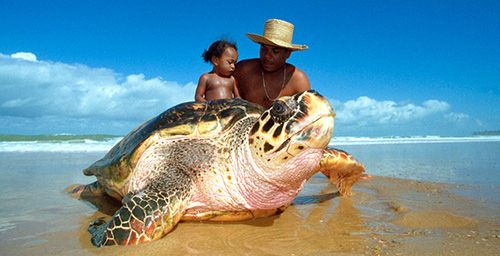

Nossos Projetos


- 

- Monitoramento da fauna e flora – Estudo de espécies ameaçadas e impacto das mudanças climáticas.
- Restauração florestal – Projetos de reflorestamento com espécies nativas.
- Bioprospecção de plantas amazônicas – Pesquisa de compostos naturais para uso medicinal e cosmético.
- Conservação de polinizadores – Proteção de abelhas, morcegos e outros polinizadores essenciais.
- Mapeamento de corredores ecológicos – Identificação de áreas prioritárias para a conectividade de ecossistemas.
Projetos de Conservação e Biodiversidade
- Educação ambiental em comunidades ribeirinhas – Oficinas sobre preservação e práticas sustentáveis.
- Turismo sustentável – Desenvolvimento de ecoturismo com impacto ambiental reduzido.
- Agrofloresta sustentável – Implementação de sistemas agroflorestais para substituir a monocultura e o desmatamento.
- Manejo sustentável de recursos naturais – Uso responsável da madeira, pesca e coleta de frutos.
- Compostagem e manejo de resíduos – Estratégias para reduzir a poluição em comunidades isoladas.
Projetos de Sustentabilidade e Comunidades
- Uso de drones para monitoramento ambiental – Controle do desmatamento e incêndios florestais.
- Sensoriamento remoto para análise de mudanças climáticas – Uso de imagens de satélite para acompanhar a degradação ambiental.
- Energia renovável para comunidades isoladas – Implementação de painéis solares e biodigestores.
- Banco de sementes nativas – Criação de um banco genético para a restauração de áreas degradadas.
- Aplicativos de denúncia ambiental – Desenvolvimento de uma plataforma para comunidades relatarem crimes ambientais.